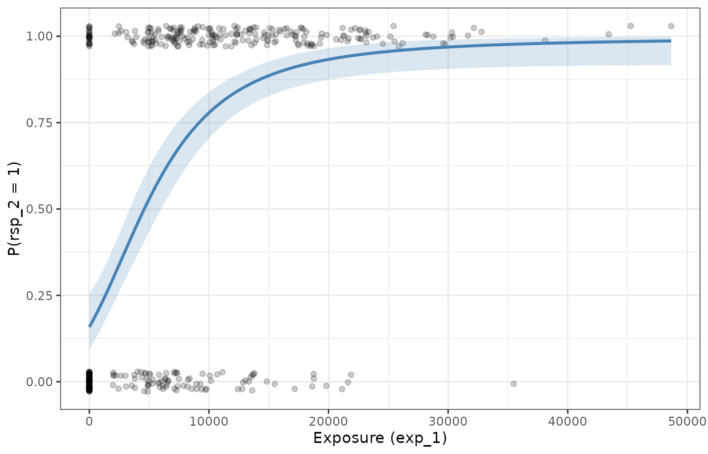

Fitting Emax models for binary outcomes
Source:vignettes/articles/fitting-logistic-emax-models.Rmd
fitting-logistic-emax-models.RmdThis article describes how to fit an Emax regression model to a
binary (0/1) outcome with emax_logistic().
It is the companion to the article on continuous outcomes, and the
interface is deliberately parallel: you specify a
structural_model, a covariate_model, and
data in exactly the same way. The statistical machinery
underneath is different, though, because a binary response cannot be
modelled with ordinary least squares. This article focuses on those
differences — the logit link, the Bernoulli error model, and why
estimation uses iterative reweighted least squares (IRLS) rather than a
single call to nls().
If you have not already read the continuous-outcome article, it is worth skimming first: the meaning of the structural parameters (, , , and the optional Hill coefficient) and the way covariates enter as linear submodels are shared between the two model types and are not repeated in full here.
The model
A structural model on the logit scale
For a binary outcome we model the probability of a positive response, , as a function of exposure. Probabilities are confined to the interval , but the Emax structural form is unbounded, so we do not model directly. Instead the Emax model is placed on the log-odds (logit) scale:
with the sigmoidal (Hill) version
available by adding a logHill term to the covariate
model, exactly as in the continuous case. The structural parameters have
the same roles as before, but they now live on the logit scale:
is the baseline log-odds at zero exposure, and
is the maximal change in log-odds that the drug can produce. As before,
and the Hill coefficient are estimated on the log scale as
logEC50 and logHill, and each structural
parameter can carry its own covariates.
The logit link is what connects this unbounded linear-on-the-logit-scale predictor back to a probability. Writing for the right-hand side (the linear predictor), the mean response is recovered through the inverse-logit (logistic) function
which maps any real value of into . This guarantees that fitted and predicted probabilities are always valid, no matter what values the structural parameters take.
The Bernoulli error model
Once the mean for observation is specified, we still need an assumption about how the observed 0/1 outcomes scatter around it. For binary data the natural choice is the Bernoulli distribution:
Two consequences of this error model matter for estimation. First, the likelihood we want to maximise is the Bernoulli (log-)likelihood
which is what logLik() returns and what
deviance() reports as
(the binomial deviance). Second, the variance of a Bernoulli observation
is
:
it is not constant, but depends on the mean. Observations with
near
or
are far more informative than those near
.
This mean-variance link is precisely what ordinary least squares
ignores, and it is the reason a bare nls() fit is
inappropriate here.
Why not a bare call to nls()?
It is tempting to just fit the structural Emax curve to the 0/1
responses with nls(), minimising
.
This is a bad idea for several related reasons:
- The wrong error model. Least squares is the maximum-likelihood estimator only under Gaussian errors with constant variance. Binary data have variance , which changes with the mean. Treating every observation as equally precise gives statistically inefficient estimates and, more seriously, standard errors, confidence intervals, and -values that are simply wrong.
- Unbounded predictions. Fitting the Emax form directly on the probability scale places no constraint on , so nothing stops the fitted curve from drifting below or above . The logit link removes this problem by construction.
- Not the maximum-likelihood estimate. Minimising squared error does not maximise the Bernoulli likelihood, so the resulting estimates lack the consistency and efficiency properties we rely on for inference.
The standard remedy for generalised linear models is iterative reweighted least squares (IRLS), also known as Fisher scoring. The idea is to replace the single least-squares problem with a sequence of weighted least-squares problems that progressively account for the mean-variance relationship. At each iteration, given the current linear predictor and fitted probabilities , we form
and solve a weighted least-squares fit of the working response on the structural model, using weights . The weights are exactly the Bernoulli variance function, so more informative observations are up-weighted; the working response is a local linearisation of the link. Iterating this scheme is equivalent to Fisher scoring and converges to the maximum-likelihood estimates under the Bernoulli model.
There is one extra wrinkle specific to Emax models. In an ordinary
logistic linear regression each weighted step is a linear
least-squares problem. Here the structural predictor is
nonlinear in the parameters (exposure enters through
),
so each weighted step is itself a weighted nonlinear least
squares problem. emax_logistic() therefore layers the IRLS
loop on top of nls(): the inner weighted NLS solve reuses
the same three optimisation algorithms available for continuous models
("gauss", "port", "levenberg"),
while the outer loop updates the weights and working response. The loop
is initialised in the GLM-standard way (starting from
to avoid degenerate weights at
and
),
warm-starts each NLS solve from the previous estimates, and stops when
the change in binomial deviance falls below a tolerance. Both the
tolerance and the maximum number of outer iterations are controlled by
emax_logistic_options():
emax_logistic_options()
#> $optim_method
#> [1] "gauss"
#>
#> $optim_control
#> $optim_control$maxiter
#> [1] 50
#>
#> $optim_control$tol
#> [1] 1e-05
#>
#> $optim_control$minFactor
#> [1] 0.0009766
#>
#> $optim_control$printEval
#> [1] FALSE
#>
#> $optim_control$warnOnly
#> [1] FALSE
#>
#> $optim_control$scaleOffset
#> [1] 0
#>
#> $optim_control$nDcentral
#> [1] FALSE
#>
#>
#> $quiet
#> [1] FALSE
#>
#> $weights
#> NULL
#>
#> $na.action
#> function (object, ...)
#> UseMethod("na.omit")
#> <bytecode: 0x555707e3e288>
#> <environment: namespace:stats>
#>
#> $max_iter
#> [1] 25
#>
#> $tol
#> [1] 1e-06The example data
We again use the bundled synthetic dataset emax_df, this
time focusing on the binary response rsp_2.
emax_df
#> # A tibble: 400 × 12
#> id dose exp_1 exp_2 rsp_1 rsp_2 cnt_a cnt_b cnt_c bin_d bin_e cat_f
#> <int> <dbl> <dbl> <dbl> <dbl> <dbl> <dbl> <dbl> <dbl> <dbl> <dbl> <fct>
#> 1 1 200 12332. 13004. 15.7 1 3.85 5.89 4.31 1 1 grp 1
#> 2 2 300 18232. 17244. 15.3 1 4.78 7.25 3.73 1 1 grp 1
#> 3 3 0 0 0 5.65 0 1.22 9.24 2.41 1 1 grp 1
#> 4 4 200 9394. 8839. 12.5 0 2.68 7.14 3.76 1 1 grp 2
#> 5 5 200 7088. 9827. 13.2 1 4.27 5.57 9.05 0 1 grp 2
#> 6 6 300 30402. 28483. 16.8 1 6.09 6.08 4.62 0 1 grp 1
#> 7 7 300 21679. 17137. 17.4 1 7.5 8.1 2.08 0 1 grp 3
#> 8 8 100 15506. 13377. 15.9 0 3.65 6.89 3.56 0 1 grp 1
#> 9 9 0 0 0 7.3 0 4.84 3.77 7.44 0 1 grp 2
#> 10 10 200 5331. 5251. 12.8 1 4.45 3.42 1.66 1 0 grp 3
#> # ℹ 390 more rowsThe binary response was generated from a logit-scale Emax model with
,
,
and
(),
plus genuine covariate effects of cnt_a (coefficient
)
and bin_d (coefficient
)
on the baseline; the remaining covariates have no effect. In other words
the data-generating linear predictor is
Binary outcomes carry much less information per observation than continuous ones, so we should expect the structural parameters — especially and — to be estimated with considerably more uncertainty than in the continuous article.
Fitting the model
The call mirrors emax_nls() exactly. We start with a
deliberately simple covariate model that puts only cnt_a on
the baseline, and add bin_d later.
mod <- emax_logistic(
structural_model = rsp_2 ~ exp_1,
covariate_model = list(
E0 ~ cnt_a, # baseline log-odds depends on cnt_a
Emax ~ 1,
logEC50 ~ 1
),
data = emax_df
)As always, check convergence before interpreting anything. For an
emaxlogistic model this means both that the inner NLS
solves succeeded and that the outer IRLS loop reached its deviance
tolerance.
emax_converged(mod)
#> [1] TRUEPrinting the object reports the structural and covariate models, notes that the response is binary with a logit link, and summarises the fit with the number of observations, the residual degrees of freedom, the binomial deviance, and the AIC, followed by a coefficient table with confidence intervals.
mod
#> Structural model:
#>
#> Exposure: exp_1
#> Response: rsp_2
#> Emax type: hyperbolic
#> Response type: binary (logit link)
#>
#> Covariate model:
#>
#> E0: E0 ~ cnt_a
#> Emax: Emax ~ 1
#> logEC50: logEC50 ~ 1
#>
#> Model fit:
#>
#> Observations: 400
#> Residual df: 396
#> Deviance: 331.5
#> AIC: 339.5
#>
#> Coefficients (95% CI):
#>
#> label estimate std_error lower upper
#> 1 E0_cnt_a 0.659 0.0800 0.501 0.816
#> 2 E0_Intercept -5.00 0.578 -6.14 -3.87
#> 3 Emax_Intercept 8.12 2.27 5.08 17.6
#> 4 logEC50_Intercept 9.78 0.518 8.89 11.0
#>
#> Use summary() for hypothesis tests.Interpreting the output
Coefficients are on the logit scale
coef() returns the estimates. Because the structural
model lives on the logit scale, every coefficient is interpreted there:
E0_Intercept is the baseline log-odds,
E0_cnt_a is the change in baseline log-odds per unit of
cnt_a, and so on.
coef(mod)
#> E0_cnt_a E0_Intercept Emax_Intercept logEC50_Intercept
#> 0.6588 -5.0004 8.1157 9.7832A one-unit increase in cnt_a multiplies the odds of a
positive response by
— exponentiating a logit-scale coefficient turns it into an odds
ratio, the usual way to report effects from a logistic model.
As in the continuous case, back_transform = TRUE
exponentiates the log-scale structural parameters (logEC50,
and logHill if present), returning
EC50/Hill on their natural scales:
coef(mod, back_transform = TRUE)
#> E0_cnt_a E0_Intercept Emax_Intercept EC50_Intercept
#> 0.6588 -5.0004 8.1157 17733.7870The estimated baseline (E0_Intercept near the true
)
and the cnt_a effect (near the true
)
are recovered reasonably well, whereas the structural
and
are less precisely pinned down — a direct consequence of how little
information binary observations carry about the shape of the
exposure-response curve.
Standard errors, tests, and confidence intervals
summary() gives the coefficient table. Note that the
test statistic is a z-statistic (a Wald test referred
to the standard normal distribution), reflecting the asymptotic-normal
justification for inference in a maximum-likelihood GLM, rather than the
-statistic
used for continuous models.
summary(mod)
#> # A tibble: 4 × 7
#> label estimate std_error z_statistic p_value ci_lower ci_upper
#> <chr> <dbl> <dbl> <dbl> <dbl> <dbl> <dbl>
#> 1 E0_cnt_a 0.659 0.0800 8.24 1.79e-16 0.501 0.816
#> 2 E0_Intercept -5.00 0.578 -8.64 5.43e-18 -6.14 -3.87
#> 3 Emax_Intercept 8.12 2.27 3.58 3.45e- 4 5.08 17.6
#> 4 logEC50_Intercept 9.78 0.518 NA NA 8.89 11.0confint() computes profile-likelihood intervals from the
final weighted NLS fit at convergence. These are especially valuable
here: for weakly identified parameters such as
Emax_Intercept and logEC50_Intercept the
likelihood is distinctly non-quadratic, so the profile intervals are
wide and asymmetric in a way that a symmetric Wald interval would
misrepresent.
confint(mod)
#> 2.5% 97.5%
#> E0_cnt_a 0.5015 0.816
#> E0_Intercept -6.1358 -3.867
#> Emax_Intercept 5.0801 17.608
#> logEC50_Intercept 8.8921 11.048Note that there is no sigma() method for a logistic
model: the Bernoulli variance is fixed by the mean through
,
so there is no free residual standard-deviation parameter to
estimate.
Fitted values, residuals, and predictions
fitted() returns fitted probabilities by default, or the
linear predictor on the logit scale with type = "link":
head(fitted(mod))
#> [1] 0.70364 0.90573 0.01482 0.39544 0.53245 0.98428
head(fitted(mod, type = "link"))
#> [1] 0.8647 2.2626 -4.1967 -0.4245 0.1300 4.1373Raw residuals are not very informative for binary data, so
residuals() returns Pearson residuals by
default (raw residual divided by
)
and deviance residuals on request (whose sum of squares
equals the model deviance):
head(residuals(mod)) # Pearson
#> [1] 0.6490 0.3226 -0.1227 -0.8088 0.9371 0.1264
head(residuals(mod, type = "deviance")) # deviance
#> [1] 0.8384 0.4450 -0.1728 -1.0033 1.1227 0.1780predict() behaves like its continuous counterpart but is
link-aware. By default it returns probabilities; with
type = "link" it returns the linear predictor. When an
interval is requested, the bounds are computed on the logit
scale and then passed through the inverse-logit transformation, so they
are guaranteed to stay within
on the probability scale. We use this to draw the fitted probability
curve over a grid of exposures, holding cnt_a at its
mean:
grid <- tibble(
exp_1 = seq(0, max(emax_df$exp_1), length.out = 200),
cnt_a = mean(emax_df$cnt_a)
)
pred <- predict(mod, newdata = grid, interval = "confidence")
curve <- tibble(
exp_1 = grid$exp_1,
fit = pred[["fit"]],
lwr = pred[["lwr"]],
upr = pred[["upr"]]
)
ggplot(mapping = aes(exp_1)) +
geom_jitter(
aes(y = rsp_2),
data = emax_df,
height = 0.03,
width = 0,
alpha = 0.2
) +
geom_ribbon(
aes(ymin = lwr, ymax = upr),
data = curve,
fill = "steelblue",
alpha = 0.2
) +
geom_line(aes(y = fit), data = curve, colour = "steelblue", linewidth = 1) +
labs(x = "Exposure (exp_1)", y = "P(rsp_2 = 1)")
The raw 0/1 outcomes are jittered vertically so they can be seen; the solid line is the estimated probability of a positive response as a function of exposure, and the shaded band is its pointwise confidence band.
Comparing models
Model comparison uses the Bernoulli likelihood. AIC()
(and BIC()) are built from the binomial deviance plus a
penalty per parameter, and anova() performs a
likelihood-ratio test: the test statistic is the drop
in deviance between nested models, referred to a chi-squared
distribution with degrees of freedom equal to the difference in the
number of parameters.
Recall that bin_d has a genuine effect in the
data-generating model but was omitted above. Adding it should improve
the fit substantially:
mod_bin_d <- emax_logistic(
structural_model = rsp_2 ~ exp_1,
covariate_model = list(E0 ~ cnt_a + bin_d, Emax ~ 1, logEC50 ~ 1),
data = emax_df
)
# information criterion: lower is better
AIC(mod, mod_bin_d)
#> df AIC
#> mod 4 339.5
#> mod_bin_d 5 326.0
# likelihood-ratio test for the added covariate
anova(mod, mod_bin_d)
#> Df Deviance Df_diff LRT Pr(>Chi)
#> [1,] 4 331
#> [2,] 5 316 1 15.4 8.5e-05 ***
#> ---
#> Signif. codes: 0 '***' 0.001 '**' 0.01 '*' 0.05 '.' 0.1 ' ' 1The richer model has the lower AIC and the likelihood-ratio test
strongly favours it, and the estimated E0_bin_d coefficient
lands near the true value of
:
coef(mod_bin_d)
#> E0_cnt_a E0_bin_d E0_Intercept Emax_Intercept
#> 0.6926 1.1114 -5.6865 7.9922
#> logEC50_Intercept
#> 9.7520Where to go next
The remaining tools work for emaxlogistic objects just
as they do for continuous models:
-
Covariate selection.
emax_scm_forward()andemax_scm_backward()run stepwise selection using the same p-value criterion, andemax_scm_history()records every model tried. -
Simulation. The
simulate()method draws parameter values from their estimated distribution, computes the implied probabilities, and then draws fresh Bernoulli outcomes — useful for predictive checks and simulation-based intervals. -
Continuous outcomes. For a continuous response, use
emax_nls(), described in its own article.